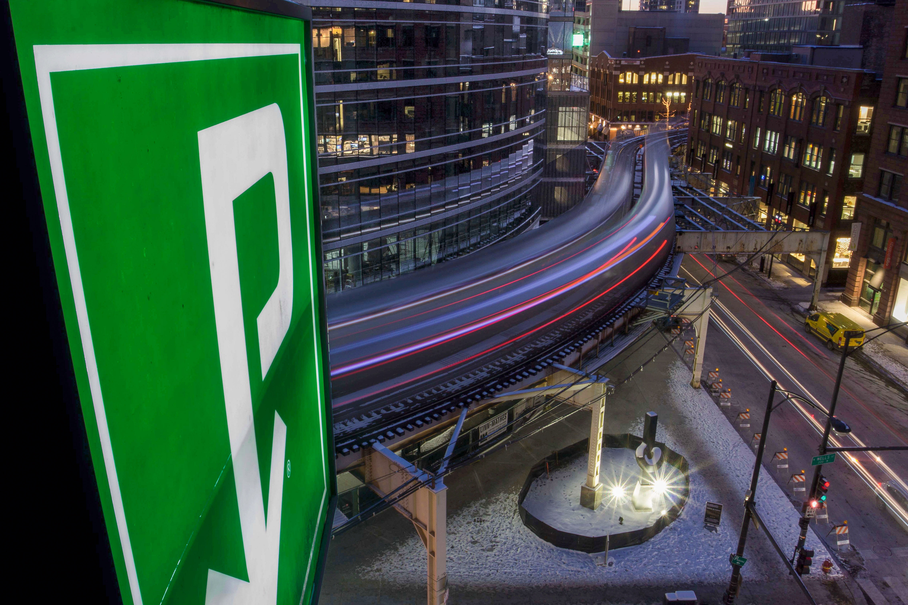

The Windy City is one of the few major cities with urban rapid train networks that
run primarily above ground. For many Chicago residents, the network provides much needed connection
with little downside. But get too close and you won't hear the end of it (literally).
Dylan Moring always wanted to live in a high-rise building. He just didn’t know he
had the Chicago L Train to thank for it.
Unlike urban rail networks in most other major cities, the Chicago L runs mostly above ground. Only about
12% of the system’s 146 stations are underground. In New York City and Washington D.C., by comparison,
more than half the stations are underground.
A Howard-bound CTA Red Line train stops at the Granville station on October 17, 2022 in Chicago.
(Holden Green)
While underground systems, like those embraced in New York and DC, are particularly vulnerable to climate
effects like oppressive heat and dangerous flooding they benefit residents by significantly the sound of
the train for people on the surface.
As Chicago’s L travels through the city, it winds its way over city streets and alleyways, above parks and
the Chicago River. And, all along its journey, it runs as close as a few feet from the second and third
floors of residential buildings.

A long-exposure photograph of two Brown Line trains curving around a building at 412 N. Wells
St. in Chicago’s River North neighborhood on January 2, 2018. (Holden Green)
There’s a shared understanding among Chicago residents that the path of the CTA’s trains creates a “train
tax” effect. Put simply: a tenant can save on rent, if they can put up with the noise.
CTA lines, colored by route
Underground segment
Daily Train Noise
Less Train NoiseMore Train Noise
Scroll to explore ▾
The sound from the train can reach about 85 decibels in Moring’s apartment when the windows are open.
That’s about equivalent to making a smoothie in a blender on its highest setting.
When the windows are closed, that sound can drop as low as 60dB – closer to the volume of a normal
conversation, but still noticeable.
“It definitely took a little bit of adjustment, especially at night,” Moring said. “But I think we got
used to it pretty quick.”
He thinks his adaptability to the noise has translated into direct savings on an otherwise great
apartment. Similar three-bedroom units could cost as much as $1,000 more per month, Moring said.
On average, homes closer to the L train tend to cost more than those further away. This is due to some
obvious reasons, like the fact that areas near L stations tend to be more built up and densely filled
with shops, restaurants and other amenities.
“There are a lot of affordable neighborhoods in Chicago,” said Michael Dunst, a Transportation Planning
Consultant in the city. “But people don’t live there or want to move there because they’re not
accessible to the L.”
As the noise that a building experiences from the CTA L system increases, the home sale price also tends
to increase. But, once a building gets too close, on average about 695 feet citywide, the opposite is
true: the added noise that comes with living closer to the train has a negative impact on home sale
prices, on average, when controlling for other factors that influence home sale prices.
The savings Moring said he achieved by choosing to live near the train helped him afford a high-rise
apartment. Others, though, often choose to miss out on certain amenities, or else pay a higher price for
them, in order to live a little further from the train.
When Natalie Trumbo moved to Chicago in 2015, she was excited to take advantage of the accessibility
offered by living near Chicago’s L system. A transplant from upstate New York, Trumbo first lived in a
ground floor unit that directly backed onto the Red line.
“It was super convenient to walk out of the alley and get on the train,” Trumbo said. “So that was a
positive. But I only did it for a year.”
Trumbo and her husband ultimately moved into a 2-bedroom condo on the 1500 block of W. Walton. Although
they still wanted the accessibility of being near the L, they prioritized being in a quieter, more
family friendly area as they planned for their future.
They now have three kids all under seven-years-old, and Trumbo commutes to the northern suburbs for her
work. It’s far more convenient, she explained, to just take their minivan around the city when they need
to, and to not have to worry about bringing their young kids and strollers onto the train.
Trumbo lives about 1,200 from a part of the Blue Line that runs underground. She can hear virtually no
noise from the train, but it also takes about 10 minutes to walk from her home to the nearest Blue Line
stop.
This distance means Trumbo is on the other side of the train tax curve from Moring; she saves on her
monthly housing cost by sacrificing some of the accessibility afforded by living further from the train,
rather than by putting up with the higher noise that comes with living closer to the train.
Despite her choice, Trumbo said it’s still important to her that her children grow up experiencing the
city and feeling comfortable on public transportation.
“I don’t want them to be afraid of it,” she said, “and I want them to be familiar with it and feel
comfortable with it.”
Like Trumbo, Anshu Tirumali wants his child to be comfortable riding the train when they’re older. And,
like Moring, Tirumali was willing to adapt to a louder environment in order to get savings on his
monthly housing bill.
Tirumali and his family live in a single family home on a block of W Argyle St in Chicago’s Jefferson
Park neighborhood.
Tirumali’s home is less than 200 feet from Interstate 90, one of the main highways that passes through
downtown Chicago.
In addition to the noise from cars and trucks on the highway, Tirumali can frequently hear the Blue line
as it passes through the highway’s median.
Also nearby, a Metra commuter rail line has a stop just at the end of his block, before it crosses both
I-90 and the Blue line and continues into the city.
“We were looking for something that was within our budget that still met these requirements,” Tirumali
said. “And so the sacrifice that we made was the proximity to noise sources.”
Despite all the noise, Tirumali was happy with the decision he and his wife made.
Jackson Starr fell in love with Chicago while visiting some friends who moved to the city for college.
In 2018, after he’d moved around the country to follow work opportunities, he finally had the chance to
move first and “make it work from there,” Starr said, and he chose Chicago.
As with many other people who move to Chicago, a big benefit to Starr was the L system.
Starr, 33, works as an IT technician for an investment company in River North – a neighborhood just
across the Chicago River from the loop. He commutes to work from Albany Park on the Brown line and
loves how convenient it is.
Though he can only hear the trains a little bit from his current apartment, he’s been in others around
the city that are much closer to the train. One of his friends, he recounted, lives just feet from the
Belmont stop on Chicago’s north side. He’s been over for drinks a few times and loved the urban feeling
of the train going by.
“It was just immaculate vibes,” Starr described. “It was immaculate city vibes. And I don’t remember
noise really being a factor.”
Further, Starr explained, he is particularly annoyed when he overhears people complaining about noise
from the train in Chicago. While there might be some exceptions, like if a particularly old building is
next to an older section of the track, he says Chicagoans should know what they’re in for when they
choose to live in a city.
“I’m not a big church guy,” Starr said. “But if I move next door to a church, I’m not gonna complain
about early morning Sunday service and bells.”
Explore the map yourself
Search any Chicago address below, or pan and zoom freely, to see modeled daily train noise exposure
anywhere in the city.